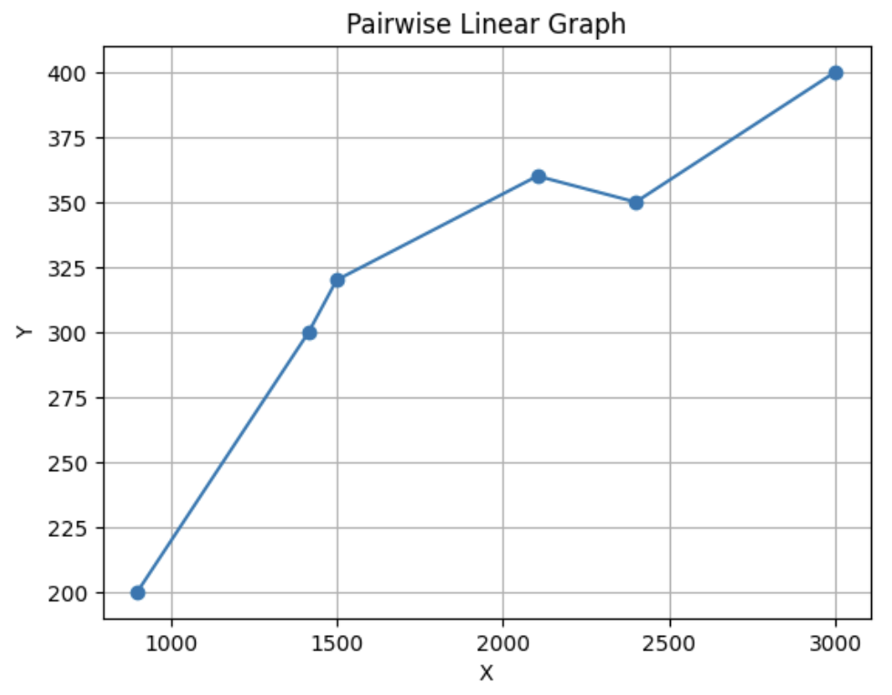

Linear Regression
Lecture 1 of Machine Learning Series
In supervised learning, when the desired output y for a given input x is not just a category but a number in a continuous domain, we call that a regression problem; otherwise, it's a classification problem.
Lecture 1: Linear Regression
In supervised learning, when the desired output y for a given input x is not just a category but a number in a continuous domain, we call that a regression problem; otherwise, it's a classification problem.
To understand Linear Regression, let's examine the classic example of ML: housing price prediction! Let's consider the following dataset:
| Area(sq.ft) | # Bedrooms | Price(1000$) |
|---|---|---|
| 2104 | 3 | 360 |
| 1500 | 2 | 320 |
| 980 | 1 | 200 |
| 2400 | 3 | 350 |
| 1416 | 2 | 300 |
| 3000 | 4 | 400 |
Here, our desired output is to predict the Price (denoted as y), and the input will be a 2D vector containing information on area and number of bedrooms ( x is a 2D vector with 2 features).
Now, suppose you are tasked with creating a model that can predict the price with the least possible error given input features. How would you approach this? We'll come back to the specific problem of house price prediction shortly.
Hint: This process involves considering two things. First, how to represent this model. Second, how to train the model.
Given one known variable(x) and one unkown variable(y) that's assumed to be dependent on the known variable, the first model that comes to my mind is, y = mx + c, which represents a line. Now how do we find m and c? Given 2 points from training dataset we can find a line that fits through those 2 points. But does it make sense to train like this? As the number of data points increases, we keep getting new values for m and c without any generalizability to the model. Considering only the area as input below is the graph that shows this model:  Now if given a new x and asked to find y, which m and c will you use?
So, the solution would be to learn one single line. But how is that possible as all these points
don't fall on the same line?
So, we aim to find the best possible line. To achieve this, we first define a loss function which
gives us a measure of how well or unwell the line is fitting the data. Here our loss function would
be sum of squares of distance from the true point to the closest point on the line. This is called
sum of least square loss. This intutively seems like a good way to measure the "fitness"
of our model. So while training our goal will be to minimise this loss value as much as possible.

This is linear regression. Now, let's backtrack to our price prediction problem with two input features:
Our objective function:
where:
- ( N ) is the number of data points,
- ( y_i ) is the actual value of the dependent variable for the ( i )th data point,
- ( \hat{y}_i ) is the predicted value of the dependent variable for the ( i )th data point.
The goal of linear regression is to find the regression coefficients that minimize the SSE, which can be expressed as:
Here we have two input features, hence the line quation is modified as:
$$ \hat{y}_i = \theta_0 + \theta_1 \cdot x_1 + \theta_2 \cdot x_2 \theta 's are said to be model parameters (core elements of model learnt during training - eg: weights) \hat{y}_i also written as h(\x_i) is the hypothesis or the predict function $$
Note: This model h is linear w.r.t. \theta
Now, the next big question: How do we determine the values of parameters? Or rather, how do we train the model?
Recall that our goal is to find parametes that minimize the loss.
Imagine you're blindfolded on a mountain, and your goal is to reach the lowest point in the valley. However, you can only sense the steepness of the slope beneath your feet but can't see the landscape. You start at a random position on the mountain. Without any knowledge of the terrain, you might take a step in any direction. With each step you take, you sense the steepness of the slope beneath your feet. This slope indicates the direction of the steepest descent, i.e., the direction towards the lowest point in the valley. Based on the slope you feel, you adjust your direction and take a step downhill. The steeper the slope, the larger your step will be. You continue this process, repeatedly adjusting your direction based on the slope, until you reach the bottom of the valley or until you can't descend further. The algorithm above has a formal name and is very famous in ML, it is called the gradient descent. Now you all might be wondering why this algorithm matters in our scenario. That is because in machine learning, the loss function represents the energy state. In our mountain analogy, the energy state corresponds to the height on the mountain, and reaching the bottom of the valley corresponds to minimizing the energy. We can reach valley using gradient descent. (For more elaborate discussion check Apendix A).
Gradient Descent Algorithm:
In gradient descent, we start with initial guesses for the parameters \theta and update them
iteratively in the opposite direction of the gradient of the loss function with respect to the
parameters. The update rule for each parameter \theta_j (where j=0,1,2,...) is given by:
Here, \alpha is the learning rate, which determines the size of the steps we take towards the minimum, and the partial derivative of the sum of squared errors (SSE) with respect to the parameter gives the direction where the slope/steep is increasing the most. Hence we subtract that. Also note, \alpha is said to be hyperparameter of the model(these are like tunable settings).
Note, A higher learning rate means taking larger steps during optimization, which can lead to faster convergence but may risk overshooting the optimal solution or bouncing around it. Conversely, a lower learning rate can make the optimization process slower but more stable.
Alternatively, only in the case of linear regression, a closed-form solution exists which is given
by:
References
Apendix
A. Loss function as energy state
In machine learning, the loss function serves a similar purpose to the concept of an "energy state" in physics. Let's elaborate on this analogy:
Loss Function as Energy State: In physics, an energy state refers to the amount of potential energy an object possesses. The higher the object is positioned, the more potential energy it has.
- Similarly, in machine learning, the loss function represents the amount of error or discrepancy between the predicted outputs of the model and the actual observed outputs (or targets) in the training data. This error can be viewed as a form of "potential" to improve the model's performance.
- Therefore, the higher the loss function value, the more "potential" there is for improvement in the model's predictions. Minimizing Loss Function as Descent to Lower Energy State:
- In physics, objects naturally tend to move towards lower energy states to minimize their potential energy.
- Likewise, in machine learning, the goal is to minimize the loss function to improve the model's predictive performance. This is akin to descending to a lower "energy state" in the model's performance space.
- Gradient descent is the method used to iteratively adjust the parameters of the model in the direction that reduces the loss function the most. This process is analogous to descending a slope to reach a lower energy state.
B. Gradient descent convergence
C. Learning Rate
Now, you all might have the question of how are we going to decide on what value should be given to alpha? There is no specific formula or algorithm to find the best learning rate. The learning rate typically falls in the range of 0.1 to 0.0001. Instead of fixing the learning rate throughout training, some approaches involve scheduling or annealing the learning rate over time. Techniques like learning rate decay, where the learning rate decreases over epochs, or cyclical learning rates, where the learning rate oscillates between two bounds, can be effective.
D. Regularisation.
It can be intutively understood that as we increase the features we can get better performance for the model on training data. But too many features causes the model to overfit to the training data leading to a model that fail miserably when a new data input that it hasn't encountered in training comes up. To avaid this we add a regularisation term. This term adds a penalty on large weight values.
https://latex.codecogs.com/svg.latex?\text{minimize}%20\left(%20||\mathbf{y}%20-%20\mathbf{X}\beta||_2^2%20+%20\lambda%20||\beta||_2^2%20\right) This modified objective function's model is called ridge linear regression.